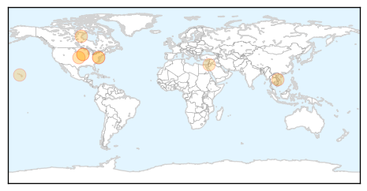

30 Day Trends
Web: 1 alerts, 0 warnings
Twitter: 2 alerts, 0 warnings
Top Articles:
- 0.929
- Scientists attempts to determine the longterm effect of Avian Flu H5N2 strain
- 0.919
- Three New Avian Flu Viruses Leave American Scientists Scrambling For Answers
- 0.856
- Case of Highly Pathogenic Avian Flu in Sac County
- 0.855
- Midwest Avian Flu Outbreak Calls For Bio-Security Precautions
- 0.751
- April 26, 2015 Archives
- 0.751
- April 25, 2015 Archives
- 0.751
- April 25, 2015 Archives
- 0.751
- April 25, 2015 Archives
- 0.610
- Source of outbreak is key question
Top Tweets:
-
No tweets found for Apr 26, 2015
Web/News Articles

Tweets

Article Locations
Article Confidences